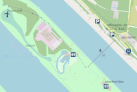

Über Kriterien auf der Donauinsel
Radrennen auf der Donauinsel gab es bereits bevor der Bau der Insel abgeschlossen war. Wir haben eine kurze Geschichte der Donauinselkriterien im Cyclodrom zusammengeschrieben.
Veranstaltungsort
Cyclodrom auf der Donauinsel. Keine direkte Zufahrt mit KFZ möglich! Parkgelegenheiten am linken Donauufer Nähe Steinspornbrücke, Raffineriestraße 1220 Wien (Geokoordinaten 48,1947129 - 16,464717).
Zugang siehe Skizze:
.
Vorsicht: Zugang Start/Ziel nur entlang der Strecke möglich. Bitte den nördlichen Zugang benutzen und die Anweisungen des Ordnerpersonals befolgen. Im Cyclodrom besteht Einbahnregelung gegen den Uhrzeigersinn!
Termine
Geizhals.at Cup VICC & Mitzi Race Day #1, Sonntag, 17. Mai 2020
- 09:30 Starbike Kids Races. Von den Minis mit Laufrad bis zur Alterklasse U11 wird einen Vormittag lang den Kleinen die Möglichkeit geboten, mit Spaß im Vordergrund Rennatmosphäre zu schnuppern. Siegerehrung im Anschluß.
- 12:00 Geizhals.at Nachwuchsrennen. → Anmeldung noch nicht geöffnet.
- 12:45 Starbike Mitzi & Friends Frauenrennen. Eine der nicht allzu häufigen Gelegenheiten für ein ausschließlich weibliches Starterinnenfeld. → Anmeldung noch nicht geöffnet.
- 13:45 Amateure, U23 Keine Voranmeldung notwendig, Anmeldung vor Ort bis 15 Minuten vor dem Start.
- 14:50 "Starbike Cyclodrom zum Kennenlernen". → Anmeldung noch nicht geöffnet.
- Im Anschluß Siegerehrungen: Geizhals.at Nachwuchsrennen, Starbike.at Mitzi & Friends Frauenrennen, "Starbike Cyclodrom zum Kennenlernen, Geizhals.at Cup
- Ausschreibung (ÖRV)
Geizhals.at Cup VICC Race Day #2, Donnerstag, 28. Mai 2020
- Ausschreibung (ÖRV)
Geizhals.at Cup VICC Race Day #3, Donnerstag, 4. Juni 2020
- Ausschreibung (ÖRV)
Geizhals.at Cup VICC Race Day #4, Donnerstag, 25. Juni 2020
- Ausschreibung (ÖRV)
Geizhals.at Cup VICC Race Day #5, Freitag, 28. August 2020
- Ausschreibung (ÖRV)
Geizhals.at Cup VICC & Mitzi Race Day #6, Sonntag, 6. September 2020
- Ausschreibung (ÖRV)